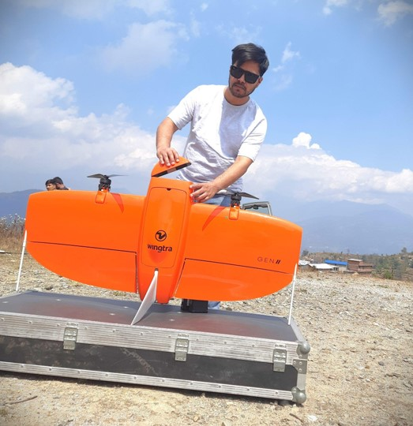

About Me
-->
With over a decade of experience in geospatial technologies, I specialize in developing innovative tools for analysis and visualization. My expertise includes Web GIS, GeoAI, Drone Mapping and Geospatial Project Management. I am dedicated to applying technology to solve complex challenges and deliver impactful solutions that drive the progress in geospatial industry.
I also bring extensive experience of co-founding the Geo-ICT company in Nepal and successfully operating it for 10 years. If you are interested in exploring more about my company, please go through my company profile.